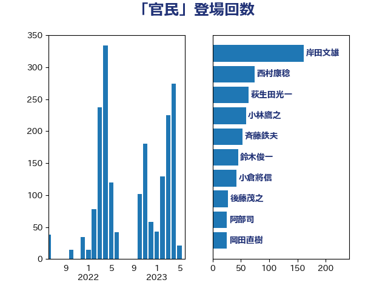

単語「官民」

| 岸田文雄 | 自由民主党 | 88 回 |
| 萩生田光一 | 自由民主党 | 70 回 |
| 小林鷹之 | 自由民主党 | 59 回 |
| 井上信治 | 自由民主党 | 50 回 |
| 平井卓也 | 自由民主党 | 49 回 |
| 菅義偉 | 自由民主党 | 45 回 |
| 梶山弘志 | 自由民主党 | 27 回 |
| 斉藤鉄夫 | 公明党 | 24 回 |
| 柴田巧 | 日本維新の会 | 24 回 |
| 塩川鉄也 | 日本共産党 | 22 回 |
| 鈴木俊一 | 自由民主党 | 20 回 |
| 田村智子 | 日本共産党 | 19 回 |
| 麻生太郎 | 自由民主党 | 15 回 |
| 田村まみ | 国民民主党 | 14 回 |
| 野上浩太郎 | 自由民主党 | 14 回 |
| 武田良太 | 自由民主党 | 13 回 |
| 室井邦彦 | 日本維新の会 | 12 回 |
| 岸信夫 | 自由民主党 | 12 回 |
| 石川博崇 | 公明党 | 12 回 |
| 赤羽一嘉 | 公明党 | 11 回 |
| 金子恭之 | 自由民主党 | 11 回 |
| 阿部司 | 日本維新の会 | 10 回 |
| 小泉進次郎 | 自由民主党 | 9 回 |
| 牧島かれん | 自由民主党 | 9 回 |
| 坂本哲志 | 自由民主党 | 8 回 |
| 音喜多駿 | 日本維新の会 | 8 回 |
| 宮崎雅夫 | 自由民主党 | 7 回 |
| 後藤茂之 | 自由民主党 | 7 回 |
| 太田房江 | 自由民主党 | 6 回 |
| 山口那津男 | 公明党 | 6 回 |
| 川田龍平 | 立憲民主党 | 6 回 |
| 河野義博 | 公明党 | 6 回 |
| 湯原俊二 | 立憲民主党 | 6 回 |
| 福島みずほ | 社会民主党 | 6 回 |
| 竹内真二 | 公明党 | 6 回 |
| 細田健一 | 自由民主党 | 6 回 |
| 青山繁晴 | 自由民主党 | 6 回 |
| 上川陽子 | 自由民主党 | 5 回 |
| 中西祐介 | 自由民主党 | 5 回 |
| 城井崇 | 立憲民主党 | 5 回 |
| 平木大作 | 公明党 | 5 回 |
| 末次精一 | 立憲民主党 | 5 回 |
| 杉尾秀哉 | 立憲民主党 | 5 回 |
| 熊谷裕人 | 立憲民主党 | 5 回 |
| 野田聖子 | 自由民主党 | 5 回 |
| 下野六太 | 公明党 | 4 回 |
| 井上英孝 | 日本維新の会 | 4 回 |
| 古川康 | 自由民主党 | 4 回 |
| 小倉將信 | 自由民主党 | 4 回 |
| 本庄知史 | 立憲民主党 | 4 回 |
| 河野太郎 | 自由民主党 | 4 回 |
| 田村憲久 | 自由民主党 | 4 回 |
| 礒崎哲史 | 国民民主党 | 4 回 |
| 道下大樹 | 立憲民主党 | 4 回 |
| 青柳仁士 | 日本維新の会 | 4 回 |
| 三木亨 | 自由民主党 | 3 回 |
| 三浦信祐 | 公明党 | 3 回 |
| 佐藤啓 | 自由民主党 | 3 回 |
| 塩田博昭 | 公明党 | 3 回 |
| 大野敬太郎 | 自由民主党 | 3 回 |
| 小林史明 | 自由民主党 | 3 回 |
| 小沼巧 | 立憲民主党 | 3 回 |
| 山本剛正 | 日本維新の会 | 3 回 |
| 山谷えり子 | 自由民主党 | 3 回 |
| 末松信介 | 自由民主党 | 3 回 |
| 林芳正 | 自由民主党 | 3 回 |
| 森山浩行 | 立憲民主党 | 3 回 |
| 櫛渕万里 | れいわ新選組 | 3 回 |
| 武見敬三 | 自由民主党 | 3 回 |
| 江島潔 | 自由民主党 | 3 回 |
| 浅野哲 | 国民民主党 | 3 回 |
| 竹内譲 | 公明党 | 3 回 |
| 笠井亮 | 日本共産党 | 3 回 |
| 緑川貴士 | 立憲民主党 | 3 回 |
| 舞立昇治 | 自由民主党 | 3 回 |
| 茂木敏充 | 自由民主党 | 3 回 |
| 藤井比早之 | 自由民主党 | 3 回 |
| 藤川政人 | 自由民主党 | 3 回 |
| 足立康史 | 日本維新の会 | 3 回 |
| 里見隆治 | 公明党 | 3 回 |
| 鈴木貴子 | 自由民主党 | 3 回 |
| 高橋はるみ | 自由民主党 | 3 回 |
| 高橋光男 | 公明党 | 3 回 |
| ながえ孝子 | 無所属 | 2 回 |
| 下村博文 | 自由民主党 | 2 回 |
| 世耕弘成 | 自由民主党 | 2 回 |
| 中村裕之 | 自由民主党 | 2 回 |
| 中野洋昌 | 公明党 | 2 回 |
| 井坂信彦 | 立憲民主党 | 2 回 |
| 仁木博文 | 無所属 | 2 回 |
| 伊佐進一 | 公明党 | 2 回 |
| 古川禎久 | 自由民主党 | 2 回 |
| 吉川元 | 立憲民主党 | 2 回 |
| 吉田統彦 | 立憲民主党 | 2 回 |
| 和田義明 | 自由民主党 | 2 回 |
| 國重徹 | 公明党 | 2 回 |
| 堤かなめ | 立憲民主党 | 2 回 |
| 大島敦 | 立憲民主党 | 2 回 |
| 安江伸夫 | 公明党 | 2 回 |
| 安達澄 | 無所属 | 2 回 |
| 宮内秀樹 | 自由民主党 | 2 回 |
| 宮路拓馬 | 自由民主党 | 2 回 |
| 小山展弘 | 立憲民主党 | 2 回 |
| 尾身朝子 | 自由民主党 | 2 回 |
| 山口晋 | 自由民主党 | 2 回 |
| 山岸一生 | 立憲民主党 | 2 回 |
| 山本博司 | 公明党 | 2 回 |
| 岡本あき子 | 立憲民主党 | 2 回 |
| 有村治子 | 自由民主党 | 2 回 |
| 本田顕子 | 自由民主党 | 2 回 |
| 梅村みずほ | 日本維新の会 | 2 回 |
| 森屋隆 | 立憲民主党 | 2 回 |
| 森本真治 | 立憲民主党 | 2 回 |
| 櫻井周 | 立憲民主党 | 2 回 |
| 武部新 | 自由民主党 | 2 回 |
| 河西宏一 | 公明党 | 2 回 |
| 浅田均 | 日本維新の会 | 2 回 |
| 浜地雅一 | 公明党 | 2 回 |
| 熊野正士 | 公明党 | 2 回 |
| 石井苗子 | 日本維新の会 | 2 回 |
| 福田達夫 | 自由民主党 | 2 回 |
| 美延映夫 | 日本維新の会 | 2 回 |
| 羽田次郎 | 立憲民主党 | 2 回 |
| 若宮健嗣 | 自由民主党 | 2 回 |
| 若松謙維 | 公明党 | 2 回 |
| 荒井優 | 立憲民主党 | 2 回 |
| 藤田文武 | 日本維新の会 | 2 回 |
| 谷合正明 | 公明党 | 2 回 |
| 赤池誠章 | 自由民主党 | 2 回 |
| 重徳和彦 | 立憲民主党 | 2 回 |
| 高野光二郎 | 自由民主党 | 2 回 |
| 鬼木誠 | 立憲民主党 | 2 回 |
| 三宅伸吾 | 自由民主党 | 1 回 |
| 三木圭恵 | 日本維新の会 | 1 回 |
| 中川宏昌 | 公明党 | 1 回 |
| 中川康洋 | 公明党 | 1 回 |
| 中川郁子 | 自由民主党 | 1 回 |
| 中西健治 | 自由民主党 | 1 回 |
| 中谷一馬 | 立憲民主党 | 1 回 |
| 亀岡偉民 | 自由民主党 | 1 回 |
| 伊東良孝 | 自由民主党 | 1 回 |
| 伊藤孝江 | 公明党 | 1 回 |
| 伊藤渉 | 公明党 | 1 回 |
| 伊藤達也 | 自由民主党 | 1 回 |
| 住吉寛紀 | 日本維新の会 | 1 回 |
| 佐々木紀 | 自由民主党 | 1 回 |
| 佐藤正久 | 自由民主党 | 1 回 |
| 佐藤英道 | 公明党 | 1 回 |
| 佐藤茂樹 | 公明党 | 1 回 |
| 加田裕之 | 自由民主党 | 1 回 |
| 加藤鮎子 | 自由民主党 | 1 回 |
| 務台俊介 | 自由民主党 | 1 回 |
| 勝部賢志 | 立憲民主党 | 1 回 |
| 北村経夫 | 自由民主党 | 1 回 |
| 古川元久 | 国民民主党 | 1 回 |
| 吉川ゆうみ | 自由民主党 | 1 回 |
| 土屋品子 | 自由民主党 | 1 回 |
| 城内実 | 自由民主党 | 1 回 |
| 大串博志 | 立憲民主党 | 1 回 |
| 大口善徳 | 公明党 | 1 回 |
| 宗清皇一 | 自由民主党 | 1 回 |
| 小宮山泰子 | 立憲民主党 | 1 回 |
| 小林茂樹 | 自由民主党 | 1 回 |
| 小野泰輔 | 日本維新の会 | 1 回 |
| 山下芳生 | 日本共産党 | 1 回 |
| 山口壯 | 自由民主党 | 1 回 |
| 山添拓 | 日本共産党 | 1 回 |
| 山田賢司 | 自由民主党 | 1 回 |
| 山際大志郎 | 自由民主党 | 1 回 |
| 岩本剛人 | 自由民主党 | 1 回 |
| 岩田和親 | 自由民主党 | 1 回 |
| 川合孝典 | 国民民主党 | 1 回 |
| 市村浩一郎 | 日本維新の会 | 1 回 |
| 平将明 | 自由民主党 | 1 回 |
| 平山佐知子 | 無所属 | 1 回 |
| 庄子賢一 | 公明党 | 1 回 |
| 星野剛士 | 自由民主党 | 1 回 |
| 朝日健太郎 | 自由民主党 | 1 回 |
| 木村英子 | れいわ新選組 | 1 回 |
| 東徹 | 日本維新の会 | 1 回 |
| 松沢成文 | 日本維新の会 | 1 回 |
| 柳ヶ瀬裕文 | 日本維新の会 | 1 回 |
| 横山信一 | 公明党 | 1 回 |
| 櫻田義孝 | 自由民主党 | 1 回 |
| 武村展英 | 自由民主党 | 1 回 |
| 水岡俊一 | 立憲民主党 | 1 回 |
| 浜口誠 | 国民民主党 | 1 回 |
| 浜野喜史 | 国民民主党 | 1 回 |
| 浮島智子 | 公明党 | 1 回 |
| 清水真人 | 自由民主党 | 1 回 |
| 清水貴之 | 日本維新の会 | 1 回 |
| 渡辺周 | 立憲民主党 | 1 回 |
| 渡辺猛之 | 自由民主党 | 1 回 |
| 漆間譲司 | 日本維新の会 | 1 回 |
| 片山さつき | 自由民主党 | 1 回 |
| 片山大介 | 日本維新の会 | 1 回 |
| 牧原秀樹 | 自由民主党 | 1 回 |
| 猪口邦子 | 自由民主党 | 1 回 |
| 玄葉光一郎 | 立憲民主党 | 1 回 |
| 玉木雄一郎 | 国民民主党 | 1 回 |
| 田中健 | 国民民主党 | 1 回 |
| 田中英之 | 自由民主党 | 1 回 |
| 田村貴昭 | 日本共産党 | 1 回 |
| 矢倉克夫 | 公明党 | 1 回 |
| 石井啓一 | 公明党 | 1 回 |
| 石井正弘 | 自由民主党 | 1 回 |
| 石井浩郎 | 自由民主党 | 1 回 |
| 石川大我 | 立憲民主党 | 1 回 |
| 磯崎仁彦 | 自由民主党 | 1 回 |
| 秋本真利 | 自由民主党 | 1 回 |
| 稲富修二 | 立憲民主党 | 1 回 |
| 穂坂泰 | 自由民主党 | 1 回 |
| 竹谷とし子 | 公明党 | 1 回 |
| 篠原豪 | 立憲民主党 | 1 回 |
| 緒方林太郎 | 無所属 | 1 回 |
| 菊田真紀子 | 立憲民主党 | 1 回 |
| 落合貴之 | 立憲民主党 | 1 回 |
| 葉梨康弘 | 自由民主党 | 1 回 |
| 藤巻健太 | 日本維新の会 | 1 回 |
| 西村康稔 | 自由民主党 | 1 回 |
| 西田昌司 | 自由民主党 | 1 回 |
| 西銘恒三郎 | 自由民主党 | 1 回 |
| 赤澤亮正 | 自由民主党 | 1 回 |
| 近藤和也 | 立憲民主党 | 1 回 |
| 進藤金日子 | 自由民主党 | 1 回 |
| 野間健 | 立憲民主党 | 1 回 |
| 長峯誠 | 自由民主党 | 1 回 |
| 阿達雅志 | 自由民主党 | 1 回 |
| 階猛 | 立憲民主党 | 1 回 |
| 青木愛 | 立憲民主党 | 1 回 |
| 高木かおり | 日本維新の会 | 1 回 |
| 高橋千鶴子 | 日本共産党 | 1 回 |
| 黄川田仁志 | 自由民主党 | 1 回 |
| 齋藤健 | 自由民主党 | 1 回 |